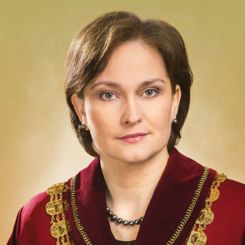

Ineta Ziemele
Ineta Ziemele is the head of the Latvian constitutional court, who also happens to be a Cambridge graduate. A member of the Commission of Strategic Analysis in Latvia. 2005 – 2015, a judge at the European Court of Human Rights. She is the author of State Continuity and Nationality: The Baltic States and Russia.

Mykolas Markauskas
Director of Liberty TV (Laisvės TV), a new type of fully crowd-funded television operating in Lithuanian and Russian languages, operating the most popular Lithuanian media YouTube channel.

Martins Vaivars
Martins Vaivars is creating a blockchain-based fact-checking platform that aims to fight fake news and has recently received €50,000 from Google. He has graduated from Oxford University, having read Politics, Philosophy and Economics.